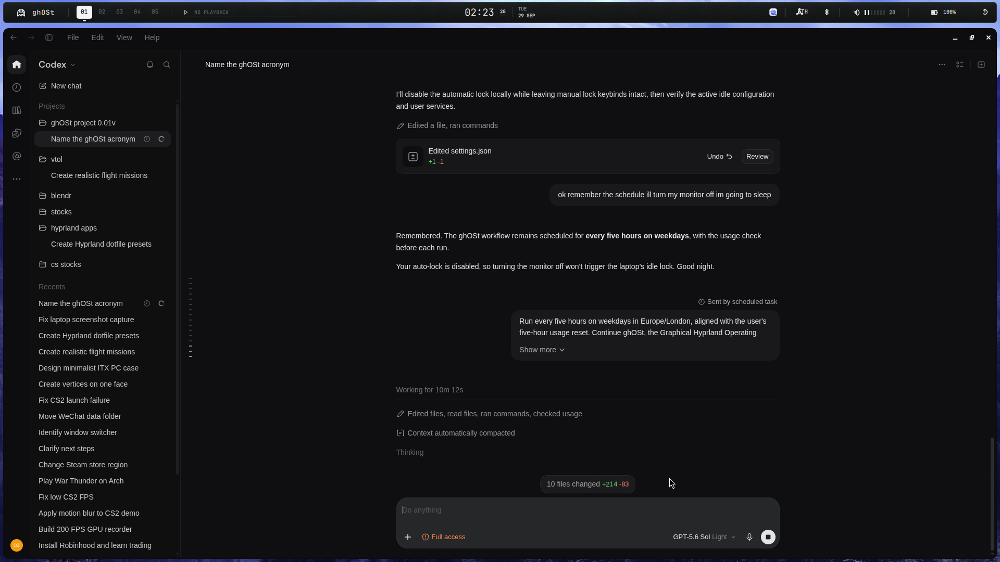
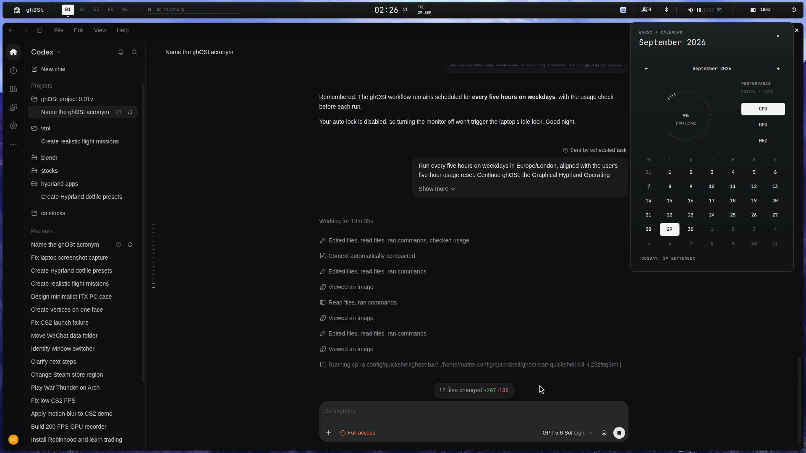
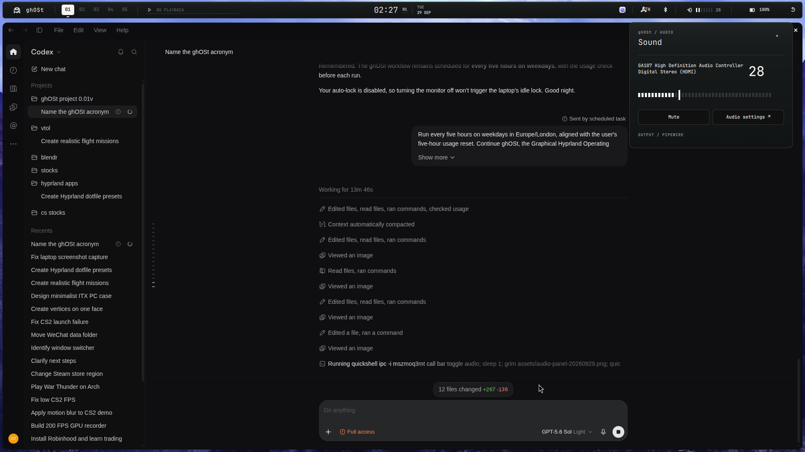

01 / TOP BAR
Instrument rail
Strict grayscale, fixed spacing, click-merge panels and a custom 2D icon system.
BUILD 0.2 / 29 SEP 2026
A monochrome Hyprland toolkit with tactile controls, deliberate spacing and instrumentation that stays out of the way.
VIEW CURRENT SURFACES ↓
CURRENT SURFACES
01 / TOP BAR
Strict grayscale, fixed spacing, click-merge panels and a custom 2D icon system.

02 / CALENDAR
CPU, GPU and processor readouts switch from the same radial tick field.

03 / AUDIO
Panels emerge from the control that opened them; no hover expansion.
SYSTEM
BLACK / WHITE
NO DECORATION
NO DELAY